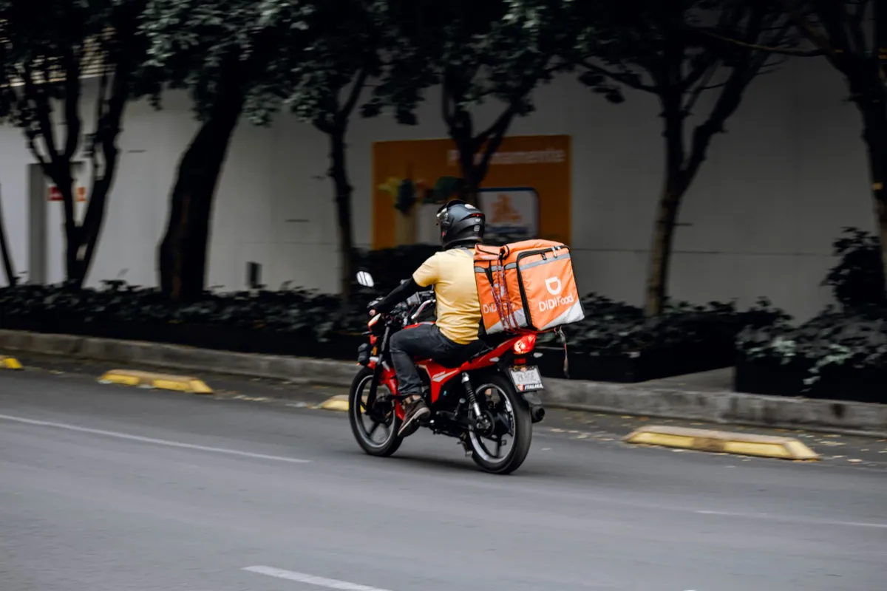

Melhor cardápio digital para delivery: o checklist antes de assinar

Não existe "melhor cardápio digital" no absoluto — existe o que resolve o seu tipo de operação pelo menor custo total. Este é o checklist objetivo que separa plataforma boa de vitrine cara.
Os 10 critérios que decidem
- Cobra comissão? Se cobra, o preço final depende do seu sucesso. Prefira valor fixo.
- A base de clientes é sua? Você consegue exportar telefone e histórico?
- O pedido cai no WhatsApp? É onde o cliente brasileiro já está.
- Abre rápido no celular? Cardápio pesado perde pedido antes do carrinho.
- Taxa por bairro e raio de entrega: sem isso, a corrida longa come a margem.
- Adicionais e observações: hambúrguer sem cebola, ponto da carne, borda recheada.
- Quem monta o cardápio? Montagem inclusa economiza dias do seu tempo.
- Campanha para a base: disparo no WhatsApp é o marketing mais barato do delivery.
- Relatório de vendas: saber o que mais sai muda o cardápio e o preço.
- Fidelidade e multa: plano bom não precisa prender ninguém.
Como o Menuzia se sai no checklist
| Critério | Menuzia |
|---|---|
| Comissão por pedido | Nenhuma — R$67/mês fixo |
| Base de clientes | Sua, com histórico e campanhas |
| Pedido no WhatsApp | Sim, com robô 24h |
| Taxa por bairro | Sim, com raio de entrega |
| Montagem do cardápio | Feita pela nossa equipe |
| Fidelidade | Não tem |
Erros comuns na escolha
- Comparar só a mensalidade e ignorar a comissão.
- Escolher pelo painel bonito e descobrir que o cliente não fecha o pedido.
- Aceitar plano "grátis" que segura a sua lista de clientes.
- Contratar módulo fiscal e PDV que a operação ainda não usa.
Melhor custo-benefício
Se o critério for custo total por pedido com todos os recursos essenciais inclusos, o caminho passa por mensalidade baixa e zero comissão. Veja o comparativo de preço mais barato do mercado, o detalhamento em preço de cardápio digital e comece por cardápio digital para delivery.
Buscas relacionadas
O que donos de restaurante e delivery pesquisam antes de contratar — cada busca leva para a página que responde a ela:
Perguntas frequentes
Qual o melhor cardápio digital para delivery pequeno?
O que cobra pouco e fixo, entrega pedido no WhatsApp e permite taxa por bairro. Para operação pequena, comissão é o pior formato porque consome margem justamente quando ela é menor.
Vale mais a pena um sistema completo com PDV?
Só se você já usa PDV e emissão fiscal no balcão. Para delivery e salão simples, o cardápio com painel de pedidos resolve por uma fração do preço.
Como comparar plataformas de forma justa?
Some mensalidade + comissão estimada do seu faturamento + módulos cobrados à parte. Compare esse total, não o preço de vitrine.
O melhor cardápio digital precisa de aplicativo próprio?
Não. Aplicativo exige o cliente instalar algo — o link e o QR Code convertem mais e custam muito menos.
Dá para trocar de plataforma depois?
Dá. Sem fidelidade, a troca é só refazer o cardápio e redirecionar a divulgação. Ter a base de clientes exportável facilita muito.
Pare de pagar comissão por pedido
Cardápio digital próprio por R$67/mês fixo. Nossa equipe configura pra você e o suporte está incluso.
Criar Meu Cardápio Agora →